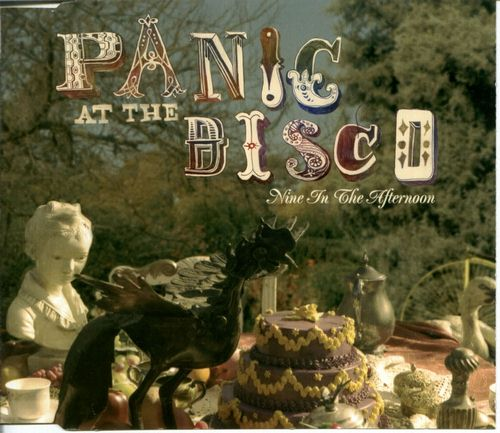

I miei rimedi

Rellena los espacios de acuerdo a la canción
Io sono sempre questa
Tutte le volte che ho bevuto
Che ho fumato, che ho ballato, che ho parlato
Che ho perduto la mia fede nelle cose
Ho una ferita con il segno del suo amore
Tu sei sempre lo stesso (stesso)
Quando dormi, quando mangi
Quando chiedi indietro il resto
Quando pensi che ti sia tutto concesso
Quando bruci le tue tappe
Per raggiungere qualcosa di diverso
È capitato di confonderti
Con qualcun'altro che non eri tu
E forse io, in fondo io, non ero io
Noi non cerchiamo promesse
Perché ci basta
Non deluderci mai E desideriamo i desideri
E sognamo di afferrare i sogni
E vediamo nel futuro un posto sicuro
Il presente ci ha trovato assenti
Desideriamo i desideri
E corriamo sempre troppo avanti
Ci illudiamo per restare illesi
E contro tutte le idiozie
Ti consegno i miei rimedi
Ed io mi consegno a te
Io sono sempre questa
Tutte le volte che ho creduto
Di sapere che ho peccato di arroganza
Che ho cambiato un'opinione
Pur di avere un'opinione
E che ho scambiato i tuoi fiori per ortiche
Mi è capitato di confonderti
Con qualcun'altro che non eri tu
E forse io, in fondo io, non ero io
Noi non cerchiamo promesse
Perché ci basta
Non deluderci mai
E desideriamo i desideri
E sognamo di afferrare i sogni
E vediamo nel futuro un posto sicuro
Il presente ci ha trovato assenti
Desideriamo i desideri
E corriamo sempre troppo avanti
Ci illudiamo per restare illesi
E contro tutte le idiozie
Ti consegno i miei rimedi
Ed io mi consegno a te
Mi consegno a te
Ti consegno anche i miei segreti
Ma non li chiamerei più tali
Visto che già siamo in due
A conoscere i dettagli
E desideriamo i desideri
E sognamo di sfiorare i sogni
E vediamo nel futuro un posto sicuro
Il presente ci ha trovato assenti
Desideriamo i desideri
E guardiamo sempre troppo avanti
Ci illudiamo per restare illesi
E contro tutte le idiozie
Ti consegno i miei rimedi
Ed io mi consegno a te
Mi consegno a te
Inviare
Ritorno